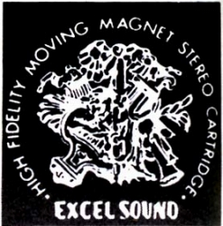
EXCEL（エクセル）
1970年設立のオーディオメーカー、エクセルサウンドのブランド。カートリッジの製造から始めた企業であり、MM型カートリッジES-70シリーズが代表作であり、MC型カートリッジの製造や他社へのOEM供給も行っていた。ただし現在ではソルボセイン素材のインシュレーター等、オーディオビジュアル関連アクセサリーとして活動している。
もともとがアナログ関連機器メーカーである為、本体のヘッドフォンページより充実しているが、現時点ではカートリッジの自社ブランドでの継続的な販売は行っていないようだが、2013年に限定生産でMC型カートリッジ
X-43 Sapphireを発売し、その後も活動を続けている。
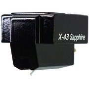
�T.カートリッジ
1.MM型カートリッジ
エクセルの代表作、ES-70シリーズとその後継機たち。
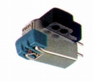
ES-70E ES-70F ES-70S ES-70EX ES-70EX4
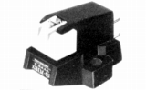
(ES-70EX TYPE�U）ES-70S TYPE�U ES-70SH TYPE�U ES-70E TYPE�U ES-70EX TYPE�U
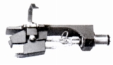
(ES-7S)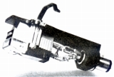
(ES-75QL/SS)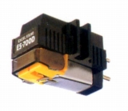
(ES-700D)*1992年に発売されたES-70S/70Eについては1970年代前半の同名モデルと価格、スペックが一致する為、同一モデルとみなしています。
2.MC型カートリッジ
エクセルも国内の多数ブランドと同様に1970年代後半よりMC型に参入した。
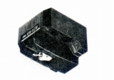
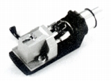
（左 ES-1CE 右 Pro81MC）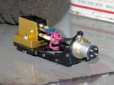
(C3-MK�U）
�U.トーンアーム
伝統を持つアナログ関連製品メーカーらしく、アームの販売も行っていた。
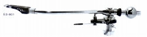
（ES-801）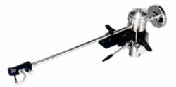
（ES-1000）
�V.その他
�@クリーナー
このブランドはアーム型のクリーナーが充実していた。一般的なベルベットタイプについては手元の資料にはない。その他カーボンブラシの除電タイプとスタイラスクリーナーが存在する。
�Aその他
ヘッドシェル2点と、カートリッジキーパー2点が確認できる。
�W.（番外）海外向け製品？
エクセルの英語版カタログを入手したので、そこに収録されているモデルを紹介する。「海外向け製品？？」としたのは、エクセルについては所有する資料が少なく、国内流通が全くなかったか、確信できない為である。当サイトでは、他にオーディオテクニカで海外向け製品を扱っているが、あちらは同時期の国内版カタログがあり、海外向けであることが、確定している。
なお入手したカタログには明確な時点が記されていないが、並行してのっているヘッドフォンなどから判断して1980年代中盤あたりから1990年の間のものと思われる。
1.カートリッジ
�@MM型カートリッジ
当時、国内で流通していたES-75シリーズの他に、国内では1970年代末に姿を消したES-70シリーズが掲載されている。興味深いことは、ES-70シリーズが後期モデル（TYPE�U）ではなく、前期モデルであること。ES-70後期モデル（TYPE�U）のボディは1970年代後半に各社に共通にみられるボディデザインであり、当時、量産効果を狙って、ボディを変更したのかもしれない。なお1990年代に国内でES-70シリーズが再販された際のモデルも、前期モデルであった。
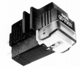
(QD-700X)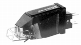
(ES-P300E)(T4Pタイプ） ES-P300C ES-P300E ES-P300X
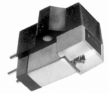
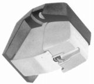
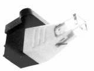
(左 ME-35 中央 ME-55 右 ME-75)ME-35 ME-45 ME-55 ME-65C ME-65E ME-65X ME-75
�AMC型カートリッジ
当時、国内で流通していたPro81MC、ES-1CE、ES-10以外に3機種が掲載されている。SUPER
MC1はPro81MCに匹敵する高級機のようだ。ボディにサファイヤ板、カンチレバーにベリリウム採用となっている。一方は出力電圧2.5mVの高出力型のMC-100、MC-100Eである。
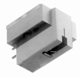
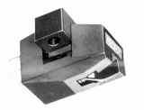
(MC-100)
2.昇圧用トランス
国内の資料には登場しない昇圧用トランスが3機種掲載されている。うち2機種は名称から判断してSUPER
MC1、Pro81MCに対応した製品だろうか？
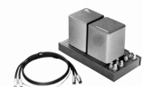 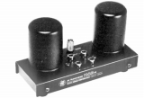
3.トーンアーム
国内で販売されたPro81TA、ES-1000、ES-801の他、国内ではシェル(A-901）でしか見かけない「901」番の型番のアームが掲載されている
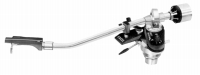
4.その他
アーム型のクリーナーは国内と同じモデルがのっていたが、ブラシ型クリーナーは国内資料に無いモデルが2点あった。他にヘッドシェル3点を収録。